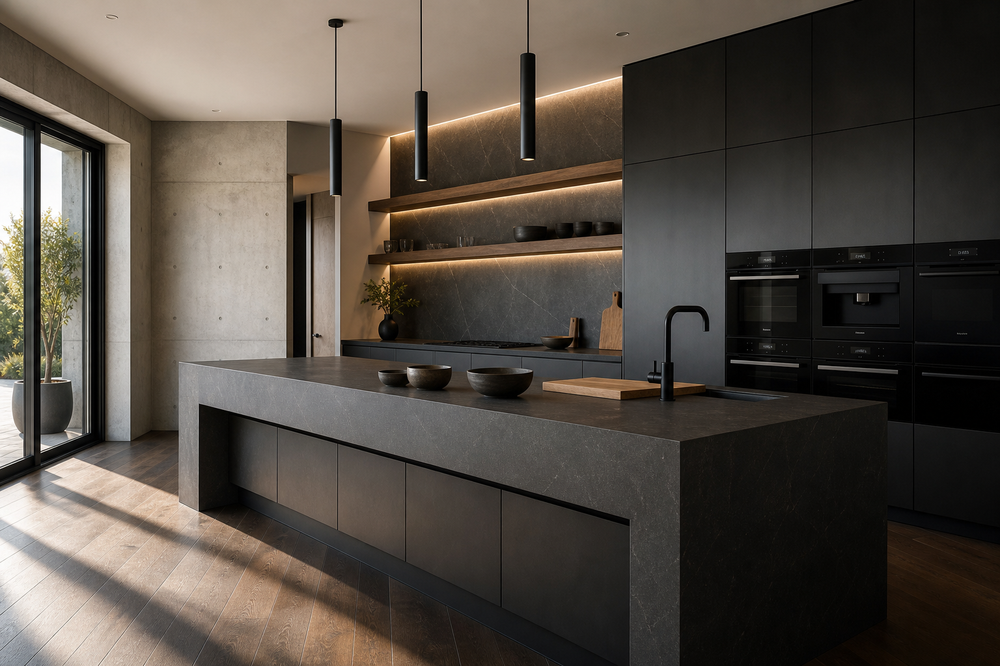

Matte Black Kitchen Design Ideas for a Minimalist Remodel
A matte black kitchen reads high-end and architectural when lighting, texture, and contrast are deliberate. The goal is moody minimalism—not a space that feels closed-in or hard to maintain. Kitchen remodeling contractors can help you mock up finishes under real LED and daylight before you order cabinets.
Palette and contrast
Black kitchens work best with a supporting cast: warm wood, soft greys, or a veined stone that catches light. If every surface is equally flat and dark, the room can lose depth. Decide early where you want sparkle (countertops, glass, faucet) versus calm matte planes (cabinet fronts).
Ceiling and trim choices matter: a soft warm white overhead can lift the whole room without abandoning the dark cabinet story.
Cabinetry, appliances, and hardware
Integrated appliances and handleless or slim-pull details reinforce a minimalist look. Confirm panel alignment, reveal sizes, and how appliance doors interact with adjacent cabinets—small tolerances show in dark finishes.
Consider anti-fingerprint laminates or textured melamine if you have young kids—matte paint is beautiful but not magic.
Island and stone
A large island in dark stone anchors the layout and gives you prep space that can handle heat and spills. Ask your fabricator about edge profiles, seam placement, and whether a honed or leathered finish fits your lifestyle better than high polish—and loop in your kitchen remodel team so appliance and overhang dimensions stay coordinated.
Waterfall ends on a dark island can look dramatic; ensure corners will not chip when vacuum cleaners and soccer bags swing through.
Lighting that keeps black kitchens livable
Combine ambient, task, and accent lighting. Under-shelf LEDs and thoughtful pendant spacing over the island make evening cooking comfortable. If you have strong daylight, plan window treatments so glare does not fight with reflective surfaces.
Avoid a single overhead fixture as your only task source—shadows on black counters make prep harder and the room feel cave-like.
Cleaning routines and finish durability
Microfiber and gentle cleaners usually beat abrasive pads on dark finishes. Wipe in the direction of grain on wood accents to avoid streaks.
Discuss touch-up paint or laminate repair kits with your supplier before install—know the plan before the first chip.
Flooring pairs beyond tile
Large-format porcelain remains popular for durability. Wide-plank wood can warm a black kitchen if you accept careful maintenance near sinks.
Transitions to living areas should be flush where possible—tripping on a raised strip in an open plan defeats the minimalist vibe.
Resale and photography considerations
Dark kitchens polarize less when daylight reads well in listing photos. Shoot during the day with blinds adjusted—not at night under a single pendant.
If resale is soon, keep stone movement approachable and hardware simple; buyers project their own style onto calmer palettes.
FAQ
Do matte black kitchens show fingerprints?
They can show more than light cabinets. Finishes and hardware choices matter, as does a realistic cleaning routine.
How do you keep a dark kitchen from feeling too heavy?
Use warm light, wood accents, and sightlines to bright areas so the room feels layered rather than monolithic.
Are matte black kitchens a fad?
Dark minimal kitchens have cycled in high-end design for years. Execution quality matters more than the color—cheap panels chip faster than the trend expires.
What wall color works with matte black cabinets?
Warm off-whites, greiges, and soft plaster tones keep contrast without sterility. Test samples next to cabinet samples, not alone on a poster board.